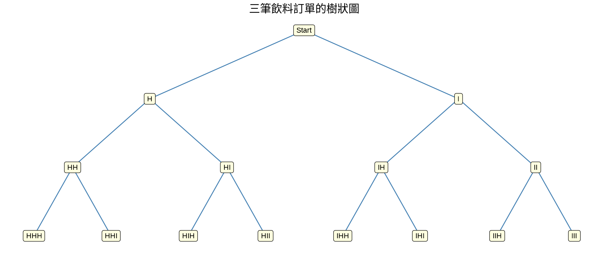
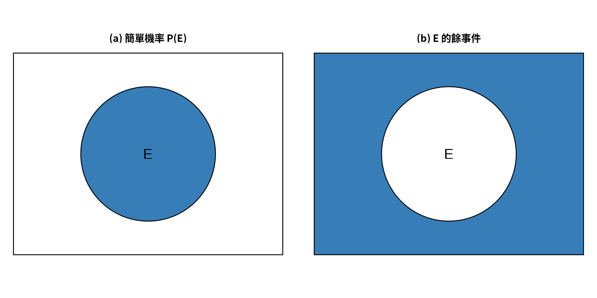
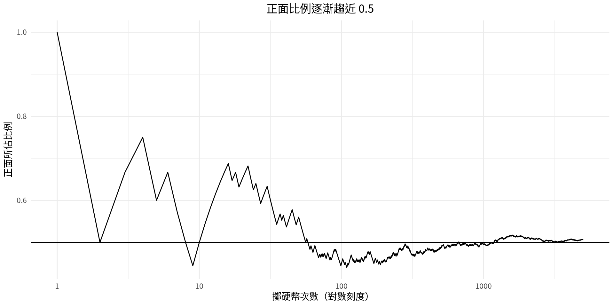
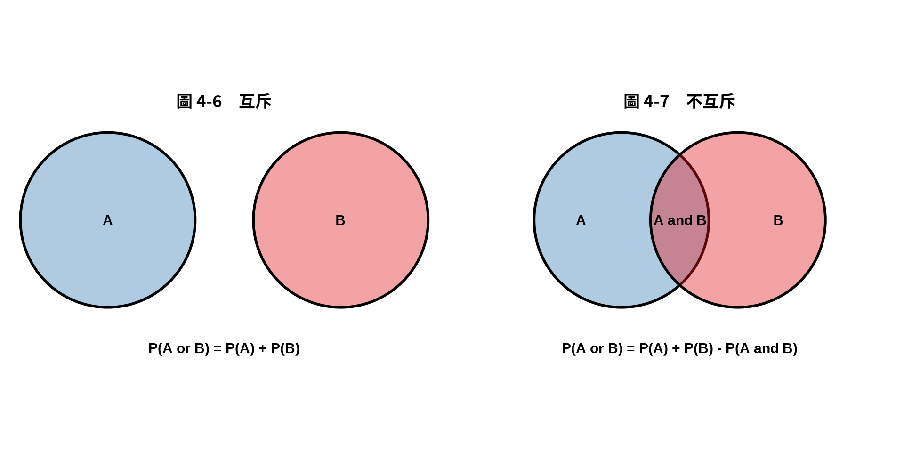

[1] 36統計學
第4章：機率與計數規則
劉昱佑
實踐大學
2026-10-08
本章概覽
第4章說明機率——事件發生的機會——以及用來計算實驗共有多少種結果的計數規則。
| 節次 | 主題 |
|---|---|
| 4-1 | 樣本空間與機率：古典機率、經驗機率、主觀機率、餘事件、大數法則 |
| 4-2 | 機率的加法規則：互斥事件、加法規則一、加法規則二 |
| 4-3 | 乘法規則與條件機率：獨立事件與相依事件、乘法規則一與二 |
| 4-4 | 計數規則：基本計數規則、階乘記號、排列、組合 |
| 4-5 | 機率與計數規則的綜合應用 |
本章學習目標
讀完本章後，你應該能夠
- 決定樣本空間，並以古典機率或經驗機率求出事件的機率。
- 運用加法規則求複合事件的機率。
- 運用乘法規則求複合事件的機率。
- 求事件的條件機率。
- 運用基本計數規則求一連串事件的結果總數。
- 運用排列規則求從 n 個物件中選取 r 個的方法數。
- 運用組合規則求從 n 個物件中不計順序選取 r 個的方法數。
- 運用計數規則求事件的機率。
第4-1節：樣本空間與機率
基本概念
擲一枚硬幣、擲一顆骰子、從一副牌中抽一張牌，這類過程稱為機率實驗。
機率實驗與結果
機率實驗是一種隨機過程，會產生明確界定的結果，稱為結果（outcome）。
結果是機率實驗單次試驗所得到的答案。
樣本空間
樣本空間是機率實驗所有可能結果所成的集合。
一些樣本空間
| 實驗 | 樣本空間 |
|---|---|
| 擲一枚硬幣 | 正面、反面 |
| 擲一顆骰子 | 1、2、3、4、5、6 |
| 回答一題是非題 | 是、非 |
| 擲兩枚硬幣 | 正正、反反、正反、反正 |
本章一律以 H 表示正面、T 表示反面。機率理論也常假設生男孩的機率為 \tfrac{1}{2}、生女孩的機率為 \tfrac{1}{2}，雖然生理性別未必只有兩種，各地的比例也不盡相同。
範例 4-1
擲兩顆骰子
同時擲出一顆綠色骰子與一顆橘色骰子，並記錄出現的點數組合。請列出樣本空間，並說明共有多少個結果。
回到 範例 4-5
範例 4-1
解題
建立矩形陣列
| 橘色 = 1 | 橘色 = 2 | 橘色 = 3 | 橘色 = 4 | 橘色 = 5 | 橘色 = 6 | |
|---|---|---|---|---|---|---|
| 綠色 = 1 | (1, 1) | (1, 2) | (1, 3) | (1, 4) | (1, 5) | (1, 6) |
| 綠色 = 2 | (2, 1) | (2, 2) | (2, 3) | (2, 4) | (2, 5) | (2, 6) |
| 綠色 = 3 | (3, 1) | (3, 2) | (3, 3) | (3, 4) | (3, 5) | (3, 6) |
| 綠色 = 4 | (4, 1) | (4, 2) | (4, 3) | (4, 4) | (4, 5) | (4, 6) |
| 綠色 = 5 | (5, 1) | (5, 2) | (5, 3) | (5, 4) | (5, 5) | (5, 6) |
| 綠色 = 6 | (6, 1) | (6, 2) | (6, 3) | (6, 4) | (6, 5) | (6, 6) |
樣本空間中共有 6 \times 6 = 36 個結果。
範例 4-2
抽一張牌
從一副洗勻的標準撲克牌中抽出一張牌，並同時記錄它的點數與花色。求這個實驗的樣本空間。
範例 4-2
範例 4-3
擲骰子三次
擲一顆骰子三次。每一次若點數為 5 或 6 就記為命中（H），否則記為未中（M）。求這個實驗的樣本空間。
範例 4-3
樹狀圖
範例 4-1 到 4-3 的樣本空間都是以觀察與推理求得。另一種找出所有可能結果的方法是使用樹狀圖。
樹狀圖
樹狀圖是由起點以及各結果點向外延伸的線段所構成的圖形，用來找出機率實驗的所有可能結果。
範例 4-4
三筆飲料訂單
某連鎖咖啡店接下來的三位顧客，每人點的不是熱飲（H）就是冰飲（I）。請用樹狀圖求這三筆訂單的樣本空間。
回到 範例 4-6
範例 4-4
解題

樣本空間為 HHH、HHI、HIH、HII、IHH、IHI、IIH、III。
事件
結果是單次試驗所得到的答案。許多問題要求兩個以上結果的機率，因此必須區分「結果」與「事件」。
事件、簡單事件與複合事件
事件由機率實驗的一組結果所組成。
只含一個結果的事件稱為簡單事件；含兩個以上結果（或簡單事件）的事件稱為複合事件——例如擲一顆骰子得到奇數。
機率有三種基本解釋：古典機率、經驗機率（相對次數機率）與主觀機率。
古典機率
古典機率利用樣本空間求出事件發生的數值機率，不必真的做實驗。古典機率假設樣本空間中所有結果都是等可能發生的。
等可能事件
等可能事件是指發生機率相同的事件。
古典機率公式
任一事件 E 的機率為
P(E) = \frac{\text{事件 } E \text{ 中的結果數}}{\text{樣本空間中的結果總數}} = \frac{n(E)}{n(S)}
其中 n(E) 是 E 中的結果數，n(S) 是樣本空間 S 中的結果總數。
機率的四捨五入規則
機率的四捨五入規則
機率應以最簡分數表示，或四捨五入到小數點後三位。當機率是極小的小數時，可以只保留到小數點後第一個非零數字——例如 0.0000587 寫成 0.00006。
若機率是由附錄 A 的表查得，則採用表中所給的小數位數。機率也可以用百分比表示。
範例 4-5
擲兩顆骰子
擲出這兩顆骰子時，求兩個點數相加等於 5 的機率。
請沿用 範例 4-1 的樣本空間。
範例 4-5
範例 4-6
三筆飲料訂單
接下來的三位顧客各點一杯熱飲或冰飲，求其中恰有兩位點冰飲的機率。
請沿用 範例 4-4 的樣本空間。
範例 4-6
「且」與「或」
在機率理論中，必須清楚理解「且」（and）與「或」（or）的意義。
- 且表示「同時發生」。抽一張牌同時是皇后且是紅心，指的就是紅心 Q。
- 或有兩種意義。求是皇后或是紅心的機率時用的是兼容或：紅心 Q 在兩邊都被數到，所以共有 4 + 13 - 1 = 16 種可能。
- 求是皇后或是國王的機率時用的是互斥或，因為兩者不可能同時發生：共有 4 + 4 = 8 種可能。
範例 4-7
抽一張牌
從一副洗勻的標準撲克牌中隨機抽出一張牌，求下列各事件的機率。
a. 抽到方塊 d. 抽到 10
b. 抽到黑色的牌 e. 抽到點數為 2、3、4 或 5 的牌
c. 抽到黑桃 A範例 4-7
解題
在 52 張牌中分別計數
[1] 0.25[1] 0.5[1] 0.01923077[1] 0.07692308[1] 0.3076923P(\text{方塊}) = \tfrac{13}{52} = \tfrac{1}{4} = 0.25；P(\text{黑色}) = \tfrac{26}{52} = \tfrac{1}{2} = 0.5；P(\text{黑桃 A}) = \tfrac{1}{52} \approx 0.019；P(10) = \tfrac{4}{52} = \tfrac{1}{13} \approx 0.077；P(\text{點數 2 至 5}) = \tfrac{16}{52} = \tfrac{4}{13} \approx 0.308。
機率法則
四個基本機率法則
- 任一事件 E 的機率是介於 0 與 1 之間（含 0 與 1）的數：0 \leq P(E) \leq 1。
- 樣本空間中所有結果的機率總和為 1。
- 若事件 E 不可能發生（即該事件在樣本空間中沒有任何成員），其機率為 0。
- 若事件 E 必然發生，則 E 的機率為 1。
當事件的機率接近 0 時，發生的可能性極低；接近 0.5 時大約是一半一半；接近 1 時則極可能發生。
範例 4-8
抽一張牌
把標準撲克牌中的 13 張紅心全部抽走，剩下的 39 張牌洗勻後抽出一張。求抽到紅心的機率。
範例 4-8
範例 4-9
抽一張牌
把標準撲克牌中的 13 張紅心全部抽走，剩下的 39 張牌洗勻後抽出一張。求抽到的牌不是紅心的機率。
範例 4-9
餘事件
事件的餘事件
事件 E 的餘事件（補事件）是樣本空間中不屬於事件 E 的所有結果所成的集合，記作 \bar{E}（讀作「E bar」）。
餘事件法則
P(\bar{E}) = 1 - P(E) \qquad \text{或} \qquad P(E) = 1 - P(\bar{E}) \qquad \text{或} \qquad P(E) + P(\bar{E}) = 1
只要知道事件或其餘事件的機率之一，另一個就可以用 1 減去它求得。
範例 4-10
求餘事件
請寫出下列各事件的餘事件：
a. 選到名稱以字母 J 開頭的月份
b. 選到落在週末的星期幾
c. 擲兩顆骰子，點數和大於 9
d. 從 0 到 9 中選到奇數範例 4-10
解題
列出剩下的結果
[1] "February" "March" "April" "May" "August" "September"
[7] "October" "November" "December" [1] "Mon" "Tue" "Wed" "Thu" "Fri"[1] 2 3 4 5 6 7 8 9[1] 0 2 4 6 8a. 選到名稱以 F、M、A、S、O、N、D 開頭的月份。b. 選到週一至週五的平日。c. 擲兩顆骰子，點數和為 2 到 9。d. 選到偶數，包含 0。
機率的文氏圖
事件與其餘事件合起來就是整個樣本空間，因此 P(E) + P(\bar{E}) = 1。機率可以用文氏圖來表示。

矩形代表整個樣本空間，P(S) = 1；圖 (b) 中著色的區域就是 P(\bar{E})。
範例 4-11
到貨速度
某電商平台的訂單中，58% 在 1 天內送達，31% 需要 2 天，11% 需要 3 天以上。隨機選出一筆訂單，求它需要 2 天以上才送達的機率。（模擬資料）
範例 4-11
經驗機率
古典機率與經驗機率的差別在於：古典機率假設各結果等可能發生，而經驗機率依據實際的經驗資料來判斷結果發生的可能性。
經驗機率公式
給定一個次數分配，事件落在某一組的機率為
P(E) = \frac{\text{該組的次數}}{\text{分配中的總次數}} = \frac{f}{n}
這種機率稱為經驗機率，以觀察為依據。
範例 4-12
付款方式
某網路商店詢問 80 位消費者最近一次下單時使用的付款方式。
付款方式 次數
信用卡 32
行動支付 28
超商付現 16
銀行轉帳 4
80求消費者使用行動支付的機率。（模擬資料）
回到 範例 4-13
範例 4-12
範例 4-13
付款方式
沿用 範例 4-12 中 80 位消費者的調查結果，求下列各機率。
a. 消費者使用信用卡
b. 消費者使用行動支付或超商付現
c. 消費者既不用信用卡也不用行動支付
d. 消費者沒有使用銀行轉帳範例 4-13
解題
計算四個機率
a. P(\text{信用卡}) = \tfrac{32}{80} = \tfrac{2}{5} = 0.4。b. \tfrac{28}{80} + \tfrac{16}{80} = \tfrac{44}{80} = \tfrac{11}{20} = 0.55。c. 兩者皆非即為超商付現或銀行轉帳：\tfrac{16}{80} + \tfrac{4}{80} = \tfrac{20}{80} = \tfrac{1}{4} = 0.25。d. 1 - \tfrac{4}{80} = \tfrac{76}{80} = \tfrac{19}{20} = 0.95。
範例 4-14
住房人數
台北一家旅館記錄了某一週 200 筆入住的同行人數。（模擬資料）
同行人數 次數
1 人 46
2 人 78
3 人 34
4 人 30
5 人以上 12
200隨機抽出一筆入住紀錄，求該筆入住的人數為 (a) 2 人、(b) 少於 3 人、(c) 至多 3 人、(d) 至少 4 人的機率。
範例 4-14
大數法則
大數法則
擲硬幣次數很少時，正面的經驗機率通常不會剛好是 \tfrac{1}{2}。但隨著試驗次數增加，若硬幣是公正的，正面的經驗機率會逐漸趨近理論機率 \tfrac{1}{2}。
要注意的是，並非正面與反面的「次數」會拉平，而是正面次數佔總試驗次數的比例會趨近 \tfrac{1}{2}。
以 R 觀察大數法則

主觀機率
主觀機率
主觀機率是依據有根據的猜測或估計所給出的機率值，會用到個人的意見與不精確的資訊。
體育記者可能說某隊奪冠的機率是 70%；醫師可能說病人需要開刀的機會是 30%；地震學家可能說某地區發生地震的機率是 80%。古典機率、經驗機率與主觀機率這三種機率，都被用來解決商業、工程等各領域的問題。
機率與風險承擔
人們常常害怕發生機率很小的事，卻對更可能發生的事掉以輕心。
- 體重超重 20% 的人，平均約減少 900 天的預期壽命；而暴露於核電廠輻射所減少的預期壽命約為 0.02 天。
- 多數人以為自己死於心臟病的機會是 20 分之 1，實際上接近 3 分之 1；死於農藥中毒的機會則是 20 萬分之 1。
注意
以機率為基礎做決策時，請向具公信力的統計機構或可靠研究取得實際數據，確實理解事件發生的真實機率，衡量行動的代價，並尋找風險較低的替代方案。
第4-2節：機率的加法規則
互斥事件
在一場大型政治集會中，你可能想知道隨機選到的人是女性或是共和黨員的機率——一個人可以同時是這兩者。相對地，一個人不可能同時是民主黨員與無黨籍。
互斥事件
若兩個事件不可能同時發生（亦即沒有共同的結果），則稱為互斥事件或不相交事件。
抽一張牌得到 4 與得到 6 是互斥的；得到 4 與得到紅心則不是互斥的，因為紅心 4 同時滿足兩者。
範例 4-15
判斷是否為互斥事件
判斷下列每組事件是否互斥，並說明理由。
a. 隨機選到一筆以信用卡付款的訂單
隨機選到一筆寄往海外的訂單
b. 隨機選到一位台北辦公室的員工
隨機選到一位高雄辦公室的員工
c. 擲一顆骰子得到偶數
擲一顆骰子得到大於 4 的點數
d. 隨機選到一筆金額低於 500 元的訂單
隨機選到一筆金額高於 2,000 元的訂單範例 4-15
範例 4-16
抽一張牌
從一副牌中隨機抽出一張牌時，判斷下列哪幾組事件互斥。
a. 抽到 K 與抽到 10
b. 抽到 Q 與抽到紅心
c. 抽到黑桃與抽到黑色的牌
d. 抽到人頭牌與抽到 A範例 4-16
解題
數出同時屬於兩個事件的牌
[1] 0[1] 1[1] 13[1] 0a. 互斥。b. 不互斥——紅心 Q。c. 不互斥——黑桃本來就是黑色的牌。d. 互斥——A 不算人頭牌。
加法規則一
加法規則一
當兩事件 A 與 B 互斥時，A 或 B 發生的機率為
P(A \text{ 或 } B) = P(A) + P(B)
對三個互斥事件 A、B、C： P(A \text{ 或 } B \text{ 或 } C) = P(A) + P(B) + P(C)
加法規則一的文氏圖（圖 4-6）中兩圓不重疊：A 或 B 的機率就是兩圓面積之和。
範例 4-17
出口貨櫃
某承攬業者上個月出口至日本 48 個貨櫃、至越南 35 個貨櫃、至美國 57 個貨櫃。從上個月的紀錄中隨機抽出一個貨櫃，求它是運往日本或美國的機率。（模擬資料）
範例 4-17
範例 4-18
物流中心人力
某超商通路三座物流中心的員工人數如下。（模擬資料）
桃園 180
台中 420
台南 150隨機抽出一位物流中心員工，求他在桃園或台中工作的機率。
範例 4-18
範例 4-19
到夜市的交通方式
一項針對夜市遊客的調查發現，46% 搭捷運前往、28% 騎機車、18% 步行、8% 開車。隨機選出一位遊客，求他是騎機車或步行前往的機率。（模擬資料）
範例 4-19
加法規則二
加法規則二
若 A 與 B 不互斥，則
P(A \text{ 或 } B) = P(A) + P(B) - P(A \text{ 且 } B)
對三個不互斥的事件：
\begin{aligned} P(A \text{ 或 } B \text{ 或 } C) = {} & P(A) + P(B) + P(C) \\ & - P(A \text{ 且 } B) - P(A \text{ 且 } C) - P(B \text{ 且 } C) \\ & + P(A \text{ 且 } B \text{ 且 } C) \end{aligned}
注意
當事件互斥時也可以用加法規則二，因為此時 P(A \text{ 且 } B) 必為 0。不過仍應清楚分辨兩種情況的差別。
範例 4-20
抽一張牌
從一副牌中隨機抽出一張牌，求抽到人頭牌或方塊的機率。
範例 4-20
解題
扣掉重複的部分——方塊 J、Q、K
[1] 12[1] 13[1] 3[1] 0.4230769P(\text{人頭牌或方塊}) = \frac{12}{52} + \frac{13}{52} - \frac{3}{52} = \frac{22}{52} = \frac{11}{26} \approx 0.423
範例 4-21
商展參觀者
某商展攤位共接待 30 位參觀者，其中 18 位是零售買家、12 位是經銷商；零售買家中有 7 位、經銷商中有 9 位來自海外。隨機選出一位參觀者，求他是經銷商或來自海外的機率。（模擬資料）
範例 4-21
解題
先建立列聯表
Overseas Domestic Sum
Retail buyer 7 11 18
Distributor 9 3 12
Sum 16 14 30[1] 0.6333333P(\text{經銷商或海外}) = \frac{12}{30} + \frac{16}{30} - \frac{9}{30} = \frac{19}{30} \approx 0.633
範例 4-22
海關查驗
某物流中心的貨件被海關查驗的機率為 0.24，貨件延誤的機率為 0.15，同時被查驗又延誤的機率為 0.09。求一件貨物被查驗或延誤的機率。（模擬資料）
範例 4-22
加法規則的文氏圖

總結來說：兩事件互斥時使用加法規則一；不互斥時使用加法規則二。
第4-3節：乘法規則與條件機率
獨立事件
乘法規則可用來求依序發生的兩個以上事件的機率。先擲一枚硬幣再擲一顆骰子時，第一個事件的結果不會影響第二個事件。
獨立事件
若 A 發生與否不影響 B 發生的機率，則稱 A 與 B 為獨立事件。
其他例子：擲一顆骰子得到 6，再擲第二顆骰子得到 3；抽一張牌得到 Q，放回後再抽一張又得到 Q。
乘法規則一
當兩事件獨立時，兩者同時發生的機率為
P(A \text{ 且 } B) = P(A) \cdot P(B)
推廣到三個以上的獨立事件： P(A \text{ 且 } B \text{ 且 } C \text{ 且 } \cdots \text{ 且 } K) = P(A) \cdot P(B) \cdot P(C) \cdots P(K)
範例 4-23
擲硬幣並擲骰子
擲一枚硬幣並擲一顆骰子，求硬幣出現正面且骰子點數大於 4 的機率。
範例 4-23
範例 4-24
抽一張牌
從一副牌中抽出一張牌後放回，再抽第二張。求先抽到人頭牌、接著抽到黑桃的機率。
範例 4-24
範例 4-25
抽取彩色籌碼
一個盒子裡有 4 個紅色籌碼、3 個綠色籌碼與 5 個黃色籌碼。每次抽出一個記下顏色後放回，再抽下一個。求下列各事件的機率。
a. 連續抽到 3 個黃色籌碼
b. 先抽到 1 個綠色籌碼，再抽到紅色籌碼
c. 先抽到 2 個紅色籌碼，再抽到綠色籌碼範例 4-25
解題
因為籌碼會放回，每次的機率都相同
a. \left(\tfrac{5}{12}\right)^3 = \tfrac{125}{1728} \approx 0.072。b. \tfrac{3}{12} \cdot \tfrac{4}{12} = \tfrac{1}{12} \approx 0.083。c. \left(\tfrac{4}{12}\right)^2 \cdot \tfrac{3}{12} = \tfrac{1}{36} \approx 0.028。
範例 4-26
行動支付訂單
最近一個月，某電商平台有 45% 的訂單以行動支付付款。隨機選出三筆訂單，求這三筆都是以行動支付付款的機率。（模擬資料）
範例 4-26
範例 4-27
二次配送
某快遞公司處理的包裹中，約有 6% 需要第二次投遞。隨機選出 3 件包裹，求這 3 件都需要第二次投遞的機率。（模擬資料）
範例 4-27
相依事件
當第一個事件的發生會改變第二個事件的機率時，這兩個事件就是相依的。
相依事件
當第一個事件的結果或發生與否，會影響第二個事件的結果或發生與否，使其機率改變時，這兩個事件稱為相依事件。
例如：抽一張牌不放回再抽第二張；從甕中取球不放回再取第二球；當救生員而曬黑；成績優異而獲得獎學金；違規停車而被開罰單。
乘法規則二
當兩事件相依時，兩者同時發生的機率為
P(A \text{ 且 } B) = P(A) \cdot P(B \mid A)
其中 P(B \mid A) 是在 A 已經發生的條件下 B 發生的條件機率。
範例 4-28
客服轉接
某客服中心的來電中有 4.5% 會轉接給主管，而在轉接的案件中有 40% 最後以退款收場。隨機選出一通來電，求它被轉接且最後退款的機率。（模擬資料）
範例 4-28
範例 4-29
訂房加購
某旅館發現，造訪官網的訪客中有 35% 完成訂房，而完成訂房的人中有 60% 會加購早餐方案。隨機選出一位官網訪客，求他完成訂房且加購早餐的機率。（模擬資料）
範例 4-29
範例 4-30
連抽三張牌
從一副牌中連抽三張且不放回，求下列各事件的機率。
a. 抽到 3 張 K
b. 依序抽到 10、J、Q
c. 抽到 3 張方塊
d. 依序抽到紅色、黑色、紅色的牌範例 4-30
解題
每抽一張，分母就少 1
[1] 0.0001809955[1] 0.0004826546[1] 0.01294118[1] 0.127451a. \tfrac{24}{132{,}600} = \tfrac{1}{5525} \approx 0.0002。b. \tfrac{64}{132{,}600} = \tfrac{8}{16{,}575} \approx 0.0005。c. \tfrac{1716}{132{,}600} = \tfrac{11}{850} \approx 0.0129。d. \tfrac{16{,}900}{132{,}600} = \tfrac{13}{102} \approx 0.1275。
範例 4-31
從料箱中取件
第 1 箱裝有 3 個 A 級零件與 2 個 B 級零件，第 2 箱裝有 1 個 A 級零件與 4 個 B 級零件。先擲一枚硬幣：出現正面就從第 1 箱取出一個零件，出現反面就從第 2 箱取出一個零件。求取到 A 級零件的機率。
範例 4-31
條件機率
將乘法規則二兩邊同除以 P(A)，就得到條件機率的公式。
條件機率公式
在第一個事件 A 已經發生的條件下，第二個事件 B 發生的機率，等於兩事件同時發生的機率除以第一個事件發生的機率：
P(B \mid A) = \frac{P(A \text{ 且 } B)}{P(A)}
在文氏圖（圖 4-9）中，P(B \mid A) 是 A 與 B 交集的面積除以圓 A 的面積：加上條件就等於縮小了樣本空間。
範例 4-32
抽取彩色籌碼
一個料箱裡裝有紅色與綠色籌碼。作業員不放回地抽出兩個籌碼。若先抽到紅色再抽到綠色的機率為 \tfrac{8}{33}，而第一次抽到紅色的機率為 \tfrac{4}{11}，求在第一次抽到紅色的條件下，第二次抽到綠色的機率。
範例 4-32
範例 4-33
通關與準時到貨
在某條貿易航線上，貨件當天通關且準時送達的機率為 0.28，當天通關的機率為 0.40。已知某批貨件剛剛當天通關，求它準時送達的機率。（模擬資料）
範例 4-33
範例 4-34
海外設點意願調查
某貿易推廣單位詢問 120 家出口商，明年是否打算在東南亞設立業務據點，結果如下。（模擬資料）
公司規模 是 否 合計
小型 18 42 60
大型 36 24 60
合計 54 66 120求 (a) 在公司為大型的條件下回答「是」的機率，以及 (b) 在回答「否」的條件下公司為小型的機率。
範例 4-34
「至少」型機率
「至少」的解題策略
乘法規則可以搭配餘事件法則，簡化含「至少」的機率問題：
P(\text{至少一次}) = 1 - P(\text{完全沒有})
先求事件完全不發生的機率再用 1 減去，比逐一加總「恰好一次」「恰好兩次」等機率容易得多。
範例 4-35
連抽四張牌
某人從一副牌中抽 4 次牌，每抽一張就放回。求他至少抽到一張黑桃的機率。
範例 4-35
範例 4-36
擲骰子
擲一顆骰子 4 次，求至少出現一次 6 點的機率。
範例 4-36
範例 4-37
不良品
某工廠的紀錄顯示，一批產品中約有 4% 為不良品。從這批產品中隨機抽出 5 件，求其中至少有 1 件是不良品的機率。（模擬資料）
範例 4-37
第4-4節：計數規則
基本計數規則
許多時候必須知道一連串事件共有多少種可能結果。可用的規則有三種：基本計數規則、排列規則與組合規則。
基本計數規則
在一連串 n 個事件中，若第一個事件有 k_1 種可能、第二個事件有 k_2 種、第三個有 k_3 種，依此類推，則整個序列的可能總數為
k_1 \cdot k_2 \cdot k_3 \cdots k_n
注意： 此處的「且」代表相乘。
範例 4-38
調配一杯飲料
某手搖飲料店讓顧客選擇一種茶底與一種配料。茶底有 3 種、配料有 5 種，求可以點出多少種不同的飲料。
範例 4-38
範例 4-39
出貨條件設定
出口商每出一批貨都必須決定四項條件：
出口港： 基隆、台中、高雄
貿易條件： FOB、CIF、EXW、DDP
櫃型： 20 呎、40 呎
貨物保險： 基本、全險請問總共可以組合出多少種不同的出貨條件？
範例 4-39
範例 4-40
商品標籤
某網路商店為每件服飾標示尺寸（S、M、L、XL）、顏色（黑、白、深藍）與版型（正常、修身）。請問可以標出多少種不同的標籤？
範例 4-40
範例 4-41
棧板編碼
某倉庫用三位數字為每個棧板編碼。若數字可以重複，總共可以編出多少個棧板編碼？
範例 4-41
可否重複
注意
在計算一連串事件的可能數時，必須先確認是否允許重複。
- 若允許重複，由左到右各位置的可能數維持不變。
- 若不允許重複，由左到右各位置的可能數每次減 1。
從甕中取球或從牌堆中抽牌也是同樣的道理：放回就允許重複，不放回就不允許。
階乘記號
排列與組合規則都會用到階乘記號，以驚嘆號表示：5! = 5 \cdot 4 \cdot 3 \cdot 2 \cdot 1，9! = 9 \cdot 8 \cdot 7 \cdot 6 \cdot 5 \cdot 4 \cdot 3 \cdot 2 \cdot 1。
階乘公式
對任意計數用的自然數 n，
n! = n(n-1)(n-2)\cdots 1 \qquad \text{且} \qquad 0! = 1
排列
排列
排列是把 n 個物件依特定順序排列的一種安排方式。
範例 4-42
商品照片
某網頁的橫幅要把 6 張商品照片排成一列，請問共有多少種不同的排列方式？
範例 4-42
範例 4-43
供應商排名
某採購主管想從 7 家入圍的供應商中排出前 3 名，請問共有多少種不同的排名方式？
範例 4-43
排列規則一
排列規則一
從 n 個物件中每次取 r 個並依特定順序排列，稱為 n 個物件每次取 r 個的排列，記作 {}_nP_r，公式為
{}_nP_r = \frac{n!}{(n-r)!}
範例 4-42 與 4-43 也可用此規則求解：_6P_6 = \dfrac{6!}{0!} = 720（注意 0! = 1），_7P_3 = \dfrac{7!}{4!} = 210。
範例 4-44
研討會議程
某研討會主辦人要從 7 位受邀講者中挑出 4 位安排在上午場，而且講者出場的順序有差別。請問共可以排出多少種議程？
範例 4-44
範例 4-45
季節性行銷活動
某行銷團隊要在春季推出一檔活動、秋季推出另一檔不同的活動。若團隊手上有 8 個提案可以挑選，請問共有多少種不同的安排？
範例 4-45
排列規則二
排列規則二——含相同物件
當 n 個物件中有 r_1 個相同、r_2 個相同、……、r_p 個相同時，其排列數為
\frac{n!}{r_1!\, r_2! \cdots r_p!}
其中 r_1 + r_2 + \cdots + r_p = n。
範例 4-46
字母的排列
由英文單字 LOGISTICS 的字母可以排出多少種不同的排列？
範例 4-46
組合
組合不計順序：設計師選了黃色與紅色，和選了紅色與黃色是同一回事。
組合
不計順序地選出相異物件，稱為組合。
以 A、B、C、D 四個字母每次取兩個為例，排列有 AB、AC、AD、BA、BC、BD、CA、CB、CD、DA、DB、DC；刪去重複後剩下的組合為 AB、AC、AD、BC、BD、CD。
組合規則
組合規則
從 n 個物件中選出 r 個的組合數記作 {}_nC_r，公式為
{}_nC_r = \frac{n!}{(n-r)!\,r!}
可以看出這就是排列公式的分母再乘上 r!，所以
{}_nC_r = \frac{{}_nP_r}{r!} \qquad \text{且} \qquad {}_nC_n = 1
除以 r! 就是把排列數中重複計算的部分去掉。
範例 4-47
組合
從 5 個物件中一次取 3 個，共有多少種組合？
範例 4-47
解題
套用組合規則
[1] 10 [,1] [,2] [,3] [,4] [,5] [,6] [,7] [,8] [,9] [,10]
[1,] "A" "A" "A" "A" "A" "A" "B" "B" "B" "C"
[2,] "B" "B" "B" "C" "C" "D" "C" "C" "D" "D"
[3,] "C" "D" "E" "D" "E" "E" "D" "E" "E" "E" _5C_3 = \frac{5!}{(5-3)!\,3!} = \frac{5!}{2!\,3!} = 10
從列出的結果可以確認：ABC 與 CBA 視為同一種選法，所以每三個字母的組合只算一次。
範例 4-48
供應商拜訪
某採購經理在下單前必須從 9 家入圍供應商中拜訪 3 家。請問共有多少種不同的選法？
範例 4-48
範例 4-49
專案團隊
某公司有 6 位分析師與 7 位工程師，現在要組成一個由 2 位分析師與 3 位工程師組成的專案團隊。請問共有多少種不同的組隊方式？
範例 4-49
計數規則彙整
| Rule | Definition | Formula |
|---|---|---|
| Fundamental counting rule | The number of ways a sequence of n events can occur if the first event can occur in k1 ways, the second event can occur in k2 ways, etc. | k1 * k2 * k3 * … * kn |
| Permutation rule 1 | The number of permutations of n objects taking r objects at a time (order is important) | nPr = n! / (n - r)! |
| Permutation rule 2 | The number of permutations of n objects when r1 objects are identical, r2 objects are identical, …, rp objects are identical | n! / (r1! r2! … rp!) |
| Combination rule | The number of combinations of r objects taken from n objects (order is not important) | nCr = n! / [(n - r)! r!] |
第4-5節：機率與計數規則
結合計數規則與機率規則
解題策略
計數規則可以和機率規則結合，用來解決許多類型的機率問題。先用基本計數規則、排列規則與組合規則算出事件與樣本空間中的結果數，再套用
P(E) = \frac{n(E)}{n(S)}
典型的應用像是發 5 張牌拿到某種牌型的機率，或從一群員工中挑出分析師與工程師組成專案團隊。
範例 4-50
三張 K
從一副牌中發出 5 張牌，求其中恰有 3 張 K 的機率。
範例 4-50
範例 4-51
刮傷的手機殼
一箱裝有 20 個手機殼，其中 5 個有刮傷。若隨機出貨 3 個，求下列各機率。
a. 恰有 1 個有刮傷 c. 3 個全都有刮傷
b. 沒有任何一個有刮傷 d. 至少有 1 個有刮傷範例 4-51
範例 4-51
解題
各自除以 1140
[1] 0.4605263[1] 0.3991228[1] 0.00877193[1] 0.6008772a. \dfrac{525}{1140} = \dfrac{35}{76} \approx 0.4605。b. \dfrac{455}{1140} = \dfrac{91}{228} \approx 0.3991。c. \dfrac{10}{1140} = \dfrac{1}{114} \approx 0.0088。d. 1 - \dfrac{91}{228} = \dfrac{137}{228} \approx 0.6009。
範例 4-52
選修模組
某管理培訓生要從包含 5 個財務模組與 10 個行銷模組的課表中選修 2 個模組。求他剛好選到一個財務模組與一個行銷模組的機率。
範例 4-52
範例 4-53
促銷號碼
某購物 App 以隨機抽出一組四位數字的促銷號碼來送獎，數字可以重複。求中獎號碼四位數字全部相同的機率。
範例 4-53
範例 4-54
共用辦公室
某部門有 20 位員工，分住在 10 間雙人辦公室。若隨機選出兩位員工負責籌辦尾牙，求這兩人剛好共用同一間辦公室的機率。
範例 4-54
賭博中的數學
運用排列、組合與機率規則，可以算出各種 5 張牌撲克牌型的機率。
| Hand | Ways | Probability |
|---|---|---|
| Straight flush (including a royal flush) | 40 | 0.000015 |
| Four of a kind | 624 | 0.000240 |
| Full house | 3744 | 0.001441 |
| Flush | 5108 | 0.001965 |
| Straight | 10200 | 0.003925 |
賭博中的數學（續）
| Hand | Ways | Probability |
|---|---|---|
| Three of a kind | 54912 | 0.021129 |
| Two pairs | 123552 | 0.047539 |
| One pair | 1098240 | 0.422569 |
| Less than one pair | 1302540 | 0.501177 |
| Total | 2598960 | 1.000000 |
莊家優勢在輪盤約為 5.26%，在花旗骰介於 1.4% 到 15%，在基諾則高達 29.5%。莊家優勢愈低，該遊戲對玩家愈有利。
重要名詞
第4章詞彙
古典機率（classical probability）· 組合（combination）· 事件的餘事件（complement of an event）· 複合事件（compound event）· 條件機率（conditional probability）· 相依事件（dependent events）· 不相交事件（disjoint events）· 經驗機率（empirical probability）· 等可能事件（equally likely events）· 事件（event）· 基本計數規則（fundamental counting rule）· 獨立事件（independent events）· 大數法則（law of large numbers）· 互斥事件（mutually exclusive events）· 結果（outcome）· 排列（permutation）· 機率（probability）· 機率實驗（probability experiment）· 樣本空間（sample space）· 簡單事件（simple event）· 主觀機率（subjective probability）· 樹狀圖（tree diagram）· 文氏圖（Venn diagrams）
重要公式
事件的機率
P(E) = \frac{\text{事件 } E \text{ 中的結果數}}{\text{結果總數}} = \frac{n(E)}{n(S)} \qquad P(E) = \frac{\text{該組的次數}}{\text{總次數}} = \frac{f}{n}
P(\bar{E}) = 1 - P(E) \qquad P(E) = 1 - P(\bar{E}) \qquad P(E) + P(\bar{E}) = 1
加法規則與乘法規則
P(A \text{ 或 } B) = P(A) + P(B) \qquad \text{（互斥）}
P(A \text{ 或 } B) = P(A) + P(B) - P(A \text{ 且 } B) \qquad \text{（不互斥）}
P(A \text{ 且 } B) = P(A) \cdot P(B) \qquad \text{（獨立）}
P(A \text{ 且 } B) = P(A) \cdot P(B \mid A) \qquad \text{（相依）} \qquad P(B \mid A) = \frac{P(A \text{ 且 } B)}{P(A)}
重要公式
計數規則
k_1 \cdot k_2 \cdot k_3 \cdots k_n \qquad n! = n(n-1)(n-2)\cdots 1 \qquad 0! = 1
{}_nP_r = \frac{n!}{(n-r)!} \qquad \frac{n!}{r_1!\, r_2! \cdots r_p!} \qquad {}_nC_r = \frac{n!}{(n-r)!\,r!}
重點整理
重點
- 機率的三種解釋——古典機率利用樣本空間、經驗機率利用次數分配、主觀機率則以有根據的猜測為依據。
- 機率法則—— 0 \leq P(E) \leq 1；樣本空間中所有結果的機率和為 1；不可能事件機率為 0；必然事件機率為 1。
- 餘事件—— P(\bar{E}) = 1 - P(E)；先求餘事件往往是最快的解法。
- 大數法則——試驗次數愈多，經驗機率愈趨近理論機率；拉平的是「比例」而不是「次數」。
- 加法規則——事件互斥時直接相加；不互斥時要再減去 P(A \text{ 且 } B)。
- 乘法規則——事件獨立時直接相乘；相依時改用 P(A) \cdot P(B \mid A)。
- 條件機率—— P(B \mid A) = P(A \text{ 且 } B) / P(A)：加上條件就等於縮小樣本空間。
- 「至少」型問題用餘事件求解：P(\text{至少一次}) = 1 - P(\text{完全沒有})。
- 計數規則——基本計數規則把各階段的可能數相乘；順序重要時用 {}_nP_r，不重要時用 {}_nC_r，兩者的關係是 {}_nC_r = {}_nP_r / r!。
- 計數與機率結合——先用計數規則算出 n(E) 與 n(S)，再相除。
Acknowledgement
Copyright notice. These teaching materials follow the organization and terminology of Bluman, A. G. (2023). Elementary statistics: A step by step approach (11th ed.). McGraw Hill. All rights in the original work are reserved by its authors and publishers.
Original examples. Every worked example, data set, and R script in these slides was written for this course. The data are hypothetical unless stated otherwise.
Non-commercial use only. These materials are strictly intended for educational purposes and must not be used for commercial gain or profit.
Proper attribution. Any reproduction, distribution, or use of these materials must provide proper attribution to the original source.

Elementary Statistics: A Step by Step Approach